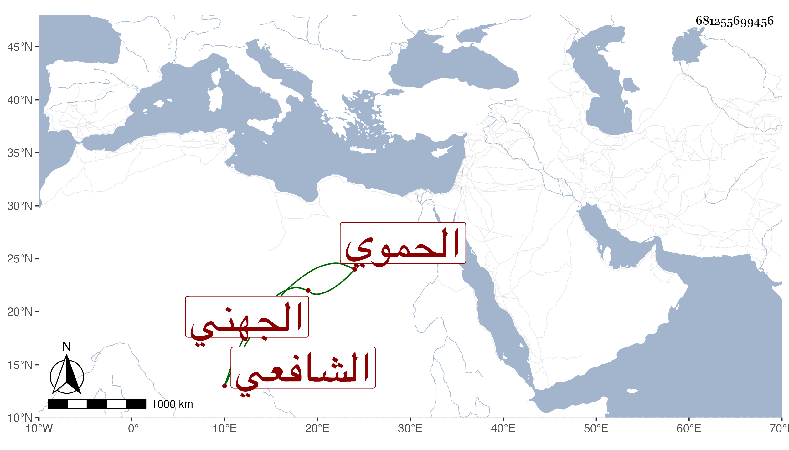

0902Sakhawi.DawLamic.ITO20230111-ara1.EIS1600.681255699456
Biography ID: 681255699456
633
محمد بن عمر بن إبرهيم بن الشرف هبة الله ناصر الدين بن الزين الجهني الحموي الشافعي أخو هبة الله الآتي ويعرف كسلفه بابن البارزي . من بيت أصل وعلم وقضاء وكان مع ذلك إنسانا حسنا عاقلا دينا عفيفا ولي قضاء بلده زمنا وشكرت سيرته . مات سنة اثنتي عشرة بها . ذكره ابن خطيب الناصرية ، وقال شيخنا في إنبائه كان موصوفا بالخير والمعرفة فاضلا عفيفا مشكورا في الحكم باشر القضاء مدة رحمه الله .
